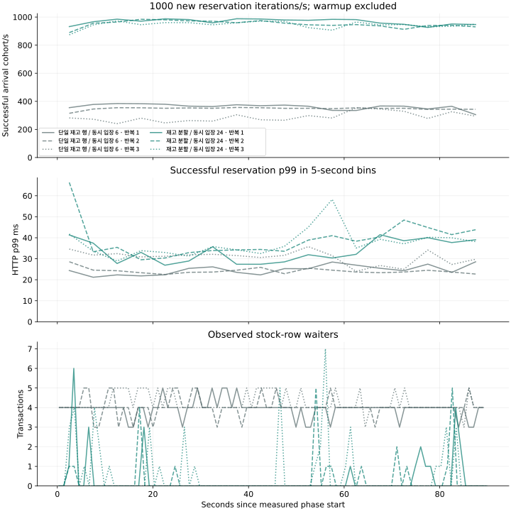

07 / DECISION
지속 부하와 복구 비용으로 비교한 재고·워커 구조
이 비교에서는 한 인기 회차의 예약 경합을 줄이기 위해 재고 행 분할을, 결제·복구 작업의 배분 대기를 줄이기 위해 워커 직접 선점을 선택했다. 모구시장의 한정 재고 중복 배정 방지와 결과 불명 결제의 조회·복구 계약을 유지하면서, 재고가 곧 소진되는 시험과 충분한 재고의 지속 쓰기를 분리해 독립 실행을 반복한 결과다. 다만 예약 처리량과 결제 복구는 서로 다른 부하에서 측정했으므로 두 개선 효과를 하나의 구매 처리량으로 합치지는 않는다.
재고 분할은 인기 회차 안에서 사용자가 균등하게 분포할 때 신규 예약 처리량을 늘렸고, 별도로 수행한 결제 포함 비교에서는 양쪽 스케줄러 스레드를 2개로 맞춘 뒤에도 워커 직접 선점이 장애 중 구매 복구에 유리했다. 다만 총 CPU, 유휴 조회, 만료 적체와 사용자 ID 편향에 따른 비용이 남았으므로, 아래에서는 예약 측정과 결제 포함 측정을 구분해 이득과 비용을 함께 살펴본다.
90초 지속 예약 쓰기에서 재고 분할의 효과
단일 재고 행 기준과 16개 재고 버킷을 비교하되, 앞선 민감도 시험에 따라 API 동시 입장 제한은 각각 6개와 24개로 정했다. 양쪽 모두 DB pool 48개, HTTP 연결 512개, PG 워커 4개, JVM heap 384MiB, DB 2CPU/1GiB를 사용했으며, redo flush-at-commit=1, sync_binlog=1과 PG 설정도 같게 유지했다. 업무 동시성만 각 구조에 맞춰 조정했으며 CPU·메모리 상한과 커밋 내구성은 유지했다. 동시 입장 제한을 12개로 통일한 구조 비교도 별도 3회 실행으로 남겼다. 별도 3반복
초당 100건·30초 워밍업을 제외하고, 충분한 재고의 한 인기 회차에 초당 1,000 iteration을 90초씩 보냈다. 실행 순서를 교대하며 두 구조를 각각 3회 독립 초기화했고, 6회 모두 Battery 전원에서 관측했다. 다만 충전량·시간·열은 완전히 고정하지 못했으며, 이전 AC 실행과는 따로 집계했다. 성공은 신규 예약 201의 고유 ID로, 영속 예약은 DB 커밋 수로 집계했으며, 이 부하에서는 결제 202를 요청하지 않으므로 구매 처리량을 측정한 것은 아니다.
예약 단독 시험 이후 실제 PG 응답의 상점 식별자(mId) 처리를 수정하고 정상 혼합 부하와 스케줄러 스레드 2개 비교를 수행했다. 수정은 Toss HTTP 응답·서명 검증에 적용됐고 시뮬레이터의 예약 경로는 같지만, 서로 다른 빌드의 결과이므로 별도로 집계했다.
| 구조 / 반복 | 시작 iteration | 완료 iteration | HTTP | 신규 예약/s | 영속 예약 | 성공 HTTP p99 ms | 성공 전체 p99 ms | dropped |
|---|---|---|---|---|---|---|---|---|
| 단일 재고 행 · 1회차 | 90001 | 90001 | 90001 | 361.82 | 32564 | 26.192 | 26 | 0 |
| 단일 재고 행 · 2회차 | 90001 | 90001 | 90001 | 348.24 | 31342 | 24.506 | 25 | 0 |
| 단일 재고 행 · 3회차 | 90001 | 90001 | 90001 | 288.37 | 25953 | 31.61 | 32 | 0 |
| 워커 직접 선점 · 1회차 | 90001 | 90001 | 90001 | 968.36 | 87152 | 34.341 | 34 | 0 |
| 워커 직접 선점 · 2회차 | 90001 | 90001 | 90001 | 950.68 | 85561 | 38.234 | 38 | 0 |
| 워커 직접 선점 · 3회차 | 90000 | 90000 | 90000 | 946.00 | 85140 | 37.597 | 38 | 0 |

목표 초당 1,000건과 실제 시작 수, dropped iteration, HTTP 타임아웃, 서버 거절을 각 analysis에서 구분하고 성공 TPS에는 신규 예약만 포함했다. 90초 지속 부하와 단계형 부하로 이 장비의 시간 추세를 확인했지만, 수일간 실행·장기 데이터 증가·발생기와 서버를 물리적으로 분리한 환경은 시험하지 않았다.
신규 예약 증가에 따른 CPU·메모리 비용
| 구현 | 관측 대상 프로세스와 VM의 CPU s | CPU s/1000예약 | k6 CPU s | k6 peak MiB | 앱 peak MiB | PG peak MiB | DB cgroup peak MiB | VM/backend RSS peak MiB | 풀 대기 peak |
|---|---|---|---|---|---|---|---|---|---|
| 단일 행 | 252.90 (230.83–258.55) | 7.53 (7.11–7.97) | 25.75 (25.46–26.50) | 223.33 (222.62–223.88) | 318.25 (317.02–324.08) | 18.23 (18.22–18.28) | 672.53 (664.93–769.53) | 2975.89 (2711.03–3291.30) | 0.00 (0.00–0.00) |
| 재고 분할·워커 직접 선점 | 633.99 (612.39–645.18) | 7.19 (6.79–7.29) | 39.24 (36.21–40.37) | 227.94 (227.77–228.69) | 320.47 (318.12–325.77) | 18.31 (18.23–18.31) | 1022.39 (871.78–1023.83) | 3112.78 (3093.12–3115.31) | 10.00 (10.00–13.00) |
표에는 3회 중앙값(최소–최대)을 표시했다. CPU 비용에는 워밍업·단계 간격·drain까지 포함되므로 분모에도 같은 구간의 전체 영속 예약을 사용했으며, VM/backend와 guest DB CPU는 중복 합산하지 않았다. Chrome·작업 도구 등 다른 호스트 프로세스는 이 구성요소 CPU 합에서 제외됐고 host 원본 top20 표본으로 별도 확인할 수 있다. 메모리는 각 구성요소의 peak이며 동시에 발생한 합계나 호스트 전체 물리 사용량으로 더하지 않는다. DB memory.current와 VM RSS는 서로 다른 관측 경계다. k6의 wait4 CPU·peak RSS, 표본별 실제 활성 VU·시작률을 함께 보존했다. CPU quota는 전용 물리 코어가 아니며 같은 노트북의 VM·디스크·메모리 대역폭을 공유한다. 관측기와 부하 발생기를 외부 장비로 옮긴 최대 TPS를 추정해서 넣지 않았다.
재고 잠금 감소 이후의 커밋·I/O 비용
같은 6회에서 수집한 SQL·DB I/O·JVM 지표도 대조하되, 여러 동시 실행을 합친 누적 시간과 벽시계 지연은 구분했다. 아래 표도 3회 중앙값(최소–최대)으로 표시했으며, deadlock과 pool timeout은 실행별 값이다.
| 구현 | 행 잠금 대기s | COMMIT 누적s | binlog+redo I/O 대기s | DB cgroup 쓰기GiB | DB throttle s | GC pause 누적s | deadlock 3회 | pool timeout 3회 |
|---|---|---|---|---|---|---|---|---|
| 단일 행 | 351.66 (349.48–373.63) | 31.81 (29.33–43.97) | 36.39 (33.53–51.06) | 1.15 (1.10–1.19) | 0.00 (0.00–0.00) | 0.10 (0.10–0.10) | 0/0/0 | 0.0/0.0/0.0 |
| 재고 분할·워커 직접 선점 | 19.20 (14.43–25.10) | 438.72 (434.47–511.26) | 158.76 (157.67–164.24) | 2.81 (2.71–3.22) | 2.91 (1.93–4.59) | 0.29 (0.27–0.29) | 0/0/0 | 0.0/0.0/0.0 |
재고 행 대기는 줄었지만 성공 커밋이 많아지면서 쓰기·로그 동기화 비용이 증가했으며, 같은 구현의 버킷 수를 1/4/16/64로 바꾼 결과에서도 이 경향이 나타났다. 단일 행 경합을 줄인 효과는 관측됐지만, 다음 병목을 물리 SSD 하나로 특정할 수는 없었다. GC pause와 pool timeout도 확인했으며 이 자료를 근거로 heap·GC·커넥션 설정을 추가 변경하지는 않았다.
사용자 ID 편향에 따른 처리량 감소
재고를 분할해도 사용자가 한 버킷에 몰리면 균등 입력에서 얻은 처리량 이득은 사라졌다. 초당 1,000건의 교정된 편향 입력에서 단일 행은 381.93건/초, 분할 구조는 388.30건/초였으므로 버킷 개수만으로 성능을 보장할 수 없다. 이 시험은 초기 사용자 중복을 수정해 index*64+suffix로 고유 ID를 만들고, 90% 분기를 같은 선호 버킷에 배정했다. 나머지 10%에도 그 버킷이 포함돼 실제 집중도는 90%보다 조금 높았고, 90% 이상이 다시 한 행을 기다렸다. 결과는 교정 후 각 1회이며 최초 원본도 보존했다. 선호 버킷 소진 시 다른 가용 버킷을 찾지만 엄격한 도착 FIFO는 제공하지 않으며, 해시 라우팅으로 편향을 해결하는 구현도 시험하지 않았다.
| 구현 | 목표/s | 신규/s | 성공 p99 ms | dropped | 근거 |
|---|---|---|---|---|---|
| 단일 행 | 100 | 100.00 | 9.477 | 0 | 단일 재고 행 · 측정 결과 |
| 단일 행 | 400 | 385.37 | 37.77 | 0 | 단일 재고 행 · 측정 결과 |
| 단일 행 | 1000 | 381.93 | 42.293 | 0 | 단일 재고 행 · 측정 결과 |
| 단일 행 | 100 | 100.03 | 8.521 | 0 | 단일 재고 행 · 측정 결과 |
| 재고 분할·워커 직접 선점 | 100 | 100.03 | 8.837 | 0 | 워커 직접 선점 · 측정 결과 |
| 재고 분할·워커 직접 선점 | 400 | 396.63 | 37.293 | 0 | 워커 직접 선점 · 측정 결과 |
| 재고 분할·워커 직접 선점 | 1000 | 388.30 | 43.509 | 0 | 워커 직접 선점 · 측정 결과 |
| 재고 분할·워커 직접 선점 | 100 | 100.03 | 8.66 | 0 | 워커 직접 선점 · 측정 결과 |
PG 응답 지연에 따른 워커 점유와 처리량
효과 적용 지연만 늘렸던 앞선 시험과 달리, 워커 직접 선점 구조에서 response_delay와 query_delay를 각각 200ms로 설정해 HTTP 응답 대기의 영향을 확인했다. 승인 응답 유실 20%는 response_delay 전에 연결을 닫으므로 모든 승인 호출이 200ms를 쓰는 것은 아니다. QUERY는 응답 지연 전에 읽은 상태를 돌려줄 수 있어 오래된 관측도 같은 검증·재조회 경로로 처리한다. worker4/8은 같은 구조의 설정 판별이며 추가 대안 개수로 세지 않는다. 5→10→20→40→5/s를 각 30초 실행했다. 결제 접수와 최종 구매, 단계가 끝난 뒤 수렴한 구매를 분리한다. 이 시험의 예약 TTL은 3600초이므로 결제 입장 제한에 거절된 예약은 관측 종료에도 HELD일 수 있다. 이는 접수된 결제의 결과 불명과 다르며, 해당 수와 관측 종료까지의 검열된 점유를 원본에 남겼다. 워커 수를 늘리면 PG 동시 호출과 DB 쓰기도 증가하므로, PG 호출 한도와 DB 처리 여력을 함께 고려해야 한다.
| worker | 목표 iteration/s | 신규 예약 | 결제 202 | cohort 최종 구매 | 단계 이후 구매 | HELD 잔존 | dropped | 근거 |
|---|---|---|---|---|---|---|---|---|
| 4 | 5 | 151 | 151 | 151 | 6 | 0 | 0 | 워커 직접 선점 · 측정 결과 |
| 4 | 10 | 301 | 301 | 301 | 24 | 0 | 0 | 워커 직접 선점 · 측정 결과 |
| 4 | 20 | 601 | 482 | 482 | 256 | 119 | 0 | 워커 직접 선점 · 측정 결과 |
| 4 | 40 | 1201 | 354 | 354 | 257 | 847 | 0 | 워커 직접 선점 · 측정 결과 |
| 4 | 5 | 151 | 151 | 151 | 16 | 0 | 0 | 워커 직접 선점 · 측정 결과 |
| 8 | 5 | 151 | 151 | 151 | 5 | 0 | 0 | 워커 직접 선점 · 측정 결과 |
| 8 | 10 | 301 | 301 | 301 | 12 | 0 | 0 | 워커 직접 선점 · 측정 결과 |
| 8 | 20 | 601 | 601 | 601 | 42 | 0 | 0 | 워커 직접 선점 · 측정 결과 |
| 8 | 40 | 1201 | 775 | 775 | 256 | 426 | 0 | 워커 직접 선점 · 측정 결과 |
| 8 | 5 | 151 | 151 | 151 | 5 | 0 | 0 | 워커 직접 선점 · 측정 결과 |
PG 시뮬레이터 프로세스를 멈춘 뒤의 backlog
혼합 요청 중 HTTP PG 시뮬레이터 프로세스에 SIGSTOP을 보내고 25초 뒤 SIGCONT했다. 이때는 HTTP503 제어와 달리 테스트 인증 /auth까지 멈춰 새로운 결제 시도가 줄어들 수 있으므로, 두 결과의 구매 수 차이를 그대로 처리량 우열로 해석하지 않았다. PG 복구 시점 이전에 시작했고 그때 아직 종결되지 않은 시도만 별도 cohort로 묶어 마지막 종결 시간을 계산했다. 이후 새로 시작한 거래는 그 복구 시간 분모에서 제외한다. 이 선행 혼합 입력에는 사용자 버킷과 결제·취소·만료 행동이 결합된 제약이 있으므로, 아래 결과를 입력을 독립화한 후속 구매 실험의 수치와 합산하지 않는다.
| 구조 / 반복 | 측정 구매 | 만료 | 최종 불명 | 복구 시점 backlog | 마지막 종결까지s | dropped |
|---|---|---|---|---|---|---|
| 단일 재고 행 · 측정 결과 | 1477 | 2123 | 0 | 26 | 3.010 | 0 |
| 워커 직접 선점 · 측정 결과 | 1998 | 1602 | 0 | 18 | 0.775 | 0 |
복구 대상은 DB started_at/terminal_at과 장애 주입 시각으로 구분했다. 결제를 시작하지 않은 예약은 TTL로 반환하지만 PAYMENT_PENDING은 PG 결과를 확인할 때까지 유지한다. 장기 REVIEW, 오래된 워커 복귀, DB 실패는 별도 회귀 결과에 연결했다. 복구 cohort 파생 정의 · 별도 실패 경계 검증
Redis 입장 제어와 비동기 예약 큐의 적용 조건
Redis는 품절 회차·반복 요청을 앞에서 거르거나 여러 앱이 공유하는 입장 예산에 사용할 수 있다. 다만 재고가 충분한 고유 예약은 DB 배정·사용자 guard·내구성 커밋을 수행해야 한다. Redis를 재고 기준으로 사용하지 않는다면 장애 시 제한된 DB 경로로 우회하거나 신규 입장을 닫는 정책이 필요하다. 반환 뒤에도 오래된 품절 캐시가 판매 재개를 막지 않도록 버전·재구성·TTL도 설계해야 한다. 이번에는 구현하지 않아 효과를 비교하지 못했다.
내구성 큐를 통한 예약 배치는 같은 회차의 배정을 묶어 커밋 비용을 줄일 수 있는 대안이다. durable receipt 저장, 접수 202와 최종 배정 분리, 중복 소비, 종료 중 미확정 배치 복구, 적체 상한·멱등·순서 처리가 추가된다. Kafka를 사용한다면 broker의 CPU·메모리·디스크와 운영 비용도 같은 자원 예산에 포함해야 한다. 이 단계에서 실제 비교한 구현은 재고 분할·잠금 단축·워커 직접 선점이며, 비동기 예약 큐와 배치는 구현하지 않았다.
잠금 대기 자체가 줄었다는 이유만으로 대안을 채택하지는 않았다. 재고 잠금 구간 단축은 반복 간 결과가 겹쳐 일관된 이득을 확인하기 어려웠고, 64버킷도 잠금 대기는 더 줄였지만 커밋 비용과 처리량에서 추가 이득이 없었다. 이 판단은 커밋 내구성·주기 조회·PG 복구를 모든 비교에서 유지한 상태의 결과다.
실제 PG와 운영 확장에 남는 경계
실제 테스트 카드 인증을 완료한 뒤 앱 예약→앱 결제 실행→PG 조회→내부 구매 확정까지 확인했으며, ARMED 이후 취소 의사를 수락한 경우의 실제 PG 전액 취소와 안전한 재고 반환도 검증했다. 실제 상점의 서명 없는 알림을 조회 전용 신호로 수신했고, 저장 후 ACK 유실·재전송·인증된 PG 조회를 확인했다. 다만 실제 발신자 서명 검증은 완료하지 못했으며, 합성 fixture와 독립 HTTP PG 장애 시험을 이 외부 검증의 근거로 대신하지는 않았다. 실제 인증에서 발견한 mId 결함과 재검증 기록을 확인할 수 있다.
장기 데이터 보관과 수신함 아카이빙, 종결 이력 증가에 따른 예정 작업 조회 비용, 여러 노드의 전역 입장 예산, 실제 PG 호출 한도와 물리 HA는 추가 검증이 필요하다. 여기서 확인한 것은 단일 노트북의 병목과 구조별 처리량·복구·자원 비용이다.
전체 안내와 정확한 채택 커밋 · 연결과 복구 작업 배분
측정 조건 상세: 전원 기록 정정
90초 지속 예약 시험의 초안에는 AC로 표기됐으나 호스트 전원 기록상 6회 모두 Battery였다. 본문과 표는 이 기록을 따르며 이전 AC 실행과 합산하지 않았다.
후속 비교와 해석 범위
이 글 이후에는 종결 충돌 보존과 KRW 금액 검증을 공통 수정하고, 기존 두 구조와 만료 배치 구조를 결제 재시도·최초 결제 고객·재고 반환 조건에서 다시 비교했다. 최신 결과는 아래 후속 글에서 다루되, 앞선 결제 슬롯 관리 구조 비교의 15% 기준과 후속 비교의 사전 기준이 다르므로 서로 다른 조건의 결과를 합산하지 않았다. 결제 재시도·최초 결제 고객의 구매 결과·재고 반환 비교
후속 비교에서는 종결 거래의 외부 명령 허가 결함을 모든 비교군에 수정하고 사용자·버킷·행동·PG 장애 입력을 독립화했다. 100/400건·초를 각각 독립 3회 측정한 결과와 결함 수정은 아래 글에 정리했다. 선행 단계형 혼합 시험의 입력은 16개 버킷 중 결제 8개·취소 4개·만료 4개로 행동이 묶여 있어, 당시 수치와 선택은 그 조건에 한정해 해석한다. 선행 구매 결과와 해당 비교의 선택 · 종결 거래 결함과 수정